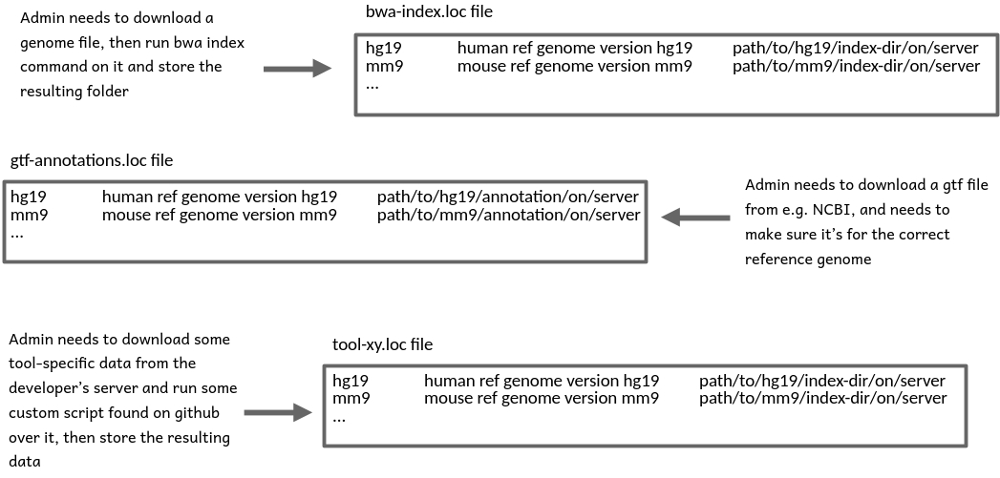
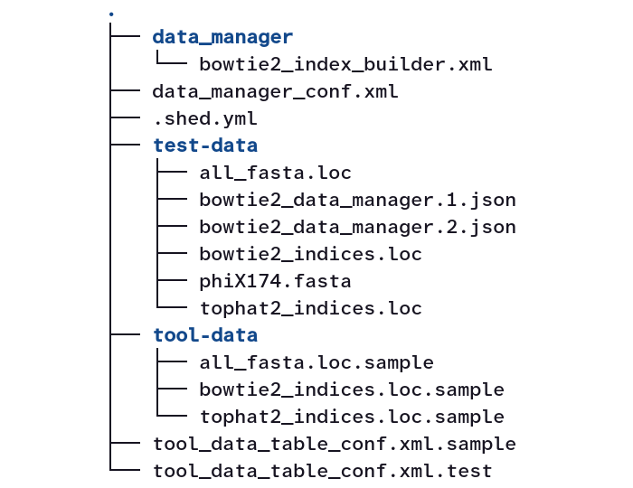

Understanding Galaxy Data Managers
| Author(s) |
|
OverviewQuestions:
Objectives:
What are Data Managers and why are they needed?
How do you write a Data Manager Tool?
How do you test a Data Manager Tool?
Understand the idea behind and the concept of Galaxy Data Managers
Understand what components are needed to write your own Data Manager Tool
Know how to test a Data Manager and be aware of the limitations of the current test framework with respect to Data Managers
Time estimation: 2 hoursLevel: Introductory IntroductorySupporting Materials:
Published: Oct 6, 2026Last modification: Oct 6, 2026License: Tutorial Content is licensed under Creative Commons Attribution 4.0 International License. The GTN Framework is licensed under MITversion Revision: 1
What are Data Managers and why are they needed?
Many tools run with two kinds of input data: some experimental data specific to the tool run (like, e.g., sequencing data) and other data, which stays the same across a range of different tool runs (e.g. a reference genome, or some genome annotations that are the same across runs for the same organism).
Forcing users to provide that second type of data for every tool run is undesirable because:
- some of that data is complicated to gather from public sources or needs some preprocessing
- it leads to unnecessary copies of data (of often very significant size) that would better be reused across user accounts
One possible solution (which was actually used in the early days of Galaxy) is to have Galaxy server admins collect and prepare commonly used data, store it on the server and record the location along with other metadata in a simple tab-separated so-called .loc file. Tools can then declare select parameters that are populated with the records of specific .loc files, can access the paths stored in them and, at tool run time, retrieve the data cached on the server.
While this is user-friendly, it shifts the burden of making cached data available to admins. With more and more tools requiring data of very different formats, this approach becomes increasingly unmanageable because, for each tool, an admin has to research where to obtain the data, or how to calculate it, and whether it needs some reformatting or other pre-processing before being usable by tools.

Open image in new tabIn principle, admins could automate some of this work through scripts, but it would be great to not have each admin reinvent the wheel, and provide one, reproducible way of installing any given reference data instead.
The idea behind Data Managers
Just like admin-installed data found via .loc files frees the user from having to care about all the details of how to obtain the data, special tools, ideally written by people who know how to obtain and set up certain types of data, should automate data collection and preparation, and the writing of .loc file records, and make life easier for admins. In other words, admins become users themselves. They don’t have to know all the details, but just run a tool that “knows” how to install a certain type of data on the server.
Comment: Reference documentThis tutorial is an attempt to describe the different parts and functions of Data Managers in a way that is structured as logically as possible.
An in-depth, technical explanation of this matter is provided at https://docs.galaxyproject.org/en/latest/dev/data_managers.html and, when in doubt, that material should be considered the reference document for Data Managers.
AgendaIn this tutorial, we will cover:
Components of a Data Manager
Here you see a tree view of the files that together constitute the widely used bowtie2 Data Manager:

Open image in new tabLets look at these components one-by-one:
-
There’s a
data_managersubfolder with the actual Data Manager Tool defined through a familiar tool xml file.This is what the admin is interacting with when installing new data (bowtie2 indices in this case).
-
In the root folder of the Data Manager, there is a Data Manager Configuration file.
This file is always named
data_manager_conf.xml. It declares, which .loc files the Data Manager will write to, defines how the output of the Data Manager Tool is to be translated into .loc file records, and where exactly Galaxy should store the data downloaded by the Data Manager Tool.When talking about Data Managers, their .loc files are called Data Tables.
-
A
.shed.ymlfile that serves the same purpose (of declaring metadata for the Galaxy toolshed) as for regular tools.We will not discuss the contents of this file any further here.
-
A
test-datafolder with, you may guess it, data for testing the Data Manager.We will discuss testing Data Managers at the end of the tutorial.
-
A
tool-datafolderAll tools, including regular ones, that use Data Tables must include a
tool-datafolder. In it, there needs to be one, typically empty or comments-only .loc.sample file for every used Data Table.Data Manager Tools are special in that they write to Data Tables instead of just reading from them, but the rule of “one .loc.sample file for each Data Table used” is independent of whether the Data Tables are read from or written to. In fact, Data Manager Tools may both write to Data Tables and use other Data Tables as a source for populating select boxes in their tool interface. The bowtie2 Data Manager, for example, lets the admin select the reference genome to build an index for from the list of installed genomes read from the
all_fastaData Table. The index it builds is useful for both bowtie2 and tophat2 so the path to the installed index will get recorded in the corresponding two Data Tables. Thetool-datafolder of this Data Manager, therefor, has three .loc.sample files -all_fasta.loc.sample,bowtie2_indices.loc.sampleandtophat2_indices.loc.sample. Each of these files consists only of comment lines describing the .loc file purpose and expected structure.Comment lines in .loc.sample files are optional and just that: comments that are ignored by Galaxy. The only place that Galaxy reads .loc file structure from is the Data Table configuration file discussed next.
Tools can use .loc.sample files with actual record lines to point to data directly shipping with the tool. That data would then also be stored in the
tool-datafolder (which explains its name). Most tools and Data Managers, however, do not ship data directly and provide empty .loc.sample files with optional comment lines like the bowtie2 Data Manager example. -
A Data Table configuration file
This file is always named
tool_data_table_conf.xml.sampleand provides the layout information for all Data Tables the Data Manager operates on and uses.For the bowtie2 Data Manager, this file has the following content:
<tables> <!-- Locations of all fasta files under genome directory --> <table name="all_fasta" comment_char="#"> <columns>value, dbkey, name, path</columns> <file path="tool-data/all_fasta.loc" /> </table> <!-- Locations of indexes in the Bowtie2 mapper format --> <table name="bowtie2_indexes" comment_char="#"> <columns>value, dbkey, name, path</columns> <file path="tool-data/bowtie2_indices.loc" /> </table> <!-- Locations of indexes in the Bowtie2 mapper format for TopHat2 to use --> <table name="tophat2_indexes" comment_char="#"> <columns>value, dbkey, name, path</columns> <file path="tool-data/tophat2_indices.loc" /> </table> </tables>The Data Tables mentioned here are the same as the ones the
tool-datafolder has .loc.sample files for, but here we find the metadata for these tables, i.e. their name and .loc file name (which could, but probably shouldn’t be different) and the identifiers for the different columns in each table.Comment: Rules and best practices around Data Table columnsWhen you are declaring the layout of a new Data Table that no other tool is using yet, you are, in principle, free to choose, how many columns it should feature and what their names should be.
There are, however, a few commonly used column names with agreed upon meaning in Data Tables that you should be aware of. These are the value, name and path columns that nearly every Data Table should use, and the column dbkey, which is very widely used in Galaxy tools and Data Tables from the field of genomics to associate Data Table records with reference genomes.
point-right For these columns, please follow the community Standards for Data Manager Tools.
Warning: Released Data Table layout information can never be changed again!Every version of every regular tool and of every Data Manager Tool using a given Data Table needs to declare its expected layout in a
tool_data_table_conf.xml.sample. An instance of Galaxy that gets conflicting layout information about the same Data Table from different tools or tool versions will refuse to load the Data Table (or even refuse to start at all) until an admin resolves the conflict.This means that once you’re publicly releasing a Data Manager Tool or regular tool with layout info for a new Data Table, e.g. by uploading the tool to a Galaxy Toolshed, you must never change its layout again in a later version of that tool, or in a new tool reusing the Data Table! No renaming of columns, no reshuffling, and no addition of new columns! You need to keep that layout frozen!
It is, therefor, important to consider a new Data Table’s columns very carefully:
- Use the standard column names, value, name, path and dbkey, appropriately (see above)
-
Think about which metadata you need to capture in the Data Table and reserve a column for it
tip Classic issue: if you are unsure whether the data the Data Table references will be versioned at some point, better assume it will be and add that version column now!
The only way to amend an inadequate table layout later is to have new tool versions declare a new Data Table. Try to avoid that confusing scenario if you can!
-
A Data Table configuration test file
This file is always named
tool_data_table_conf.xml.test, is very similar to thetool_data_table_conf.xml.sample, but exists only for testing purposes, which, again, will be discussed at the end of the tutorial.
How are Data Managers different from regular tools?
-
(Normally) only admins can run them through the Admin interface of Galaxy
-
They do create an output dataset in your history, but their “side-effects” are what really matters. As such side-effects Data Managers will:
- typically, download or compute some data.
- always instruct Galaxy to write at least one line of tab-separated info to at least one Data Table file.
-
if data was downloaded or computed, instruct Galaxy to
- move the data to a permanent storage location
- record the path to that location in the newly created Data Table record
How does a Data Manager communicate with Galaxy?
-
It declares itself a Data Manager through the
tool_type="manage_data"attribute.<tool id="example_dm" name="An example Data Manager" version="1.0" tool_type="manage_data" profile="23.0">This has several consequences:
- The tool will only appear in the Admin user interface.
- Galaxy will expect the output of the tool to be of
format="data_manager_json"and its content to describe which columns should be added to new lines in which Data Tables. -
Galaxy will expect any data downloaded or computed by the tool to live in that output’s
extra_files_path.For example, if the output section of the Data Manager looks like this:
<outputs> <data name="out_file" format="data_manager_json" label="${tool.name}"/> </outputs>it should make sure that its command section deposits data to be stored by Galaxy in
'$out_file.extra_files_path'. - The
data_manager_jsonoutput file that the wrapper declares will exist before the command section runs and will contain a mapping of the input parameters, among other things. You do not have to read the file if you don’t want to, but you will have to overwrite it!
Comment: Minimal profile version for Data ManagersData Managers were executed in Galaxy’s main environment until release 18.09!
This means:
- if you want to use
requirementsin a Data Manager Tool, you should setprofile="18.09"or higher - if you are bumping the profile version of an existing Data Manager to beyond 18.09, you may have to add requirements to it that bring in things the old version happened to find in Galaxy’s environment.
-
In its command section (or in a helper script called from there), the Data Manager Tool
-
overwrites the already existing output file with a json of the items that should be added to one or more Data Tables.
-
creates the folder at
output.extra_files_pathand deposits any data there that Galaxy should move then to a permanent storage location
-
-
The Data Manager Tool ships with a
data_manager_conf.xmlfile, which forms the bridge between thedata_manager_jsonfile that it produces as output and the Data Table files Galaxy is supposed to add lines to.An example config file:
<?xml version="1.0"?> <data_managers> <data_manager tool_file="data_manager/data_manager_cat.xml" id="data_manager_cat" > <data_table name="cat_database"> <!-- Defines a Data Table to be modified. --> <output> <!-- Handle the output of the Data Manager Tool --> <column name="value" /> <!-- columns that are going to be specified by the Data Manager Tool --> <column name="name" /> <!-- columns that are going to be specified by the Data Manager Tool --> <column name="database_folder" output_ref="out_file" > <move type="directory" relativize_symlinks="True"> <source>${database_folder}</source> <target base="${GALAXY_DATA_MANAGER_DATA_PATH}">CAT/${database_folder}</target> </move> <value_translation>${GALAXY_DATA_MANAGER_DATA_PATH}/CAT/${database_folder}</value_translation> <value_translation type="function">abspath</value_translation> </column> <column name="taxonomy_folder" output_ref="out_file" > <move type="directory" relativize_symlinks="True"> <source>${taxonomy_folder}</source> <target base="${GALAXY_DATA_MANAGER_DATA_PATH}">CAT/${taxonomy_folder}</target> </move> <value_translation>${GALAXY_DATA_MANAGER_DATA_PATH}/CAT/${taxonomy_folder}</value_translation> <value_translation type="function">abspath</value_translation> </column> </output> </data_table> </data_manager> </data_managers>This file declares column names for a single Data Table (
cat_database) that Galaxy should add lines to based on thedata_manager_jsonfile returned by thedata_manager_cattool, and which might look like this:{'data_tables': { 'cat_database': [ { 'database_folder': '<extra_files_path>/a_CAT_database', 'name': '<extra_files_path>', 'taxonomy_folder': '<extra_files_path>/a_taxonomy', 'value': '<extra_files_path>' } ] }}Here, each innermost dictionary corresponds to one line that Galaxy should add to the Data Table
cat_databaseand the keys in it match the column names declared in thedata_manager_conf.xmlfile so Galaxy knows which dict value it should write into which column of the Data Table.The example tool downloads data, then extracts it into two folders,
a_CAT_databaseanda_taxonomyunder its output’sextra_files_pathfolder. The tool wants Galaxy to record theextra_files_pathfolder name both in the value column and in the name column of thecat_databaseData Table.It also wants to store the paths to the extracted
database_folderandtaxonomy_folderto let tools, that later want to use that data, discover it from the corresponding columns of the Data Table.However, here’s the issue: The Data Manager Tool at run time knows only the
extra_files_path, but not the ultimate location that Galaxy will move the data to. This is where the more complicated parts of the abovedata_manager_conf.xmlfile enter the scene:<column name="database_folder" output_ref="out_file" > <move type="directory" relativize_symlinks="True"> <source>${database_folder}</source> <target base="${GALAXY_DATA_MANAGER_DATA_PATH}">CAT/${database_folder}</target> </move> <value_translation>${GALAXY_DATA_MANAGER_DATA_PATH}/CAT/${database_folder}</value_translation> <value_translation type="function">abspath</value_translation> </column> <column name="taxonomy_folder" output_ref="out_file" > <move type="directory" relativize_symlinks="True"> <source>${taxonomy_folder}</source> <target base="${GALAXY_DATA_MANAGER_DATA_PATH}">CAT/${taxonomy_folder}</target> </move> <value_translation>${GALAXY_DATA_MANAGER_DATA_PATH}/CAT/${taxonomy_folder}</value_translation> <value_translation type="function">abspath</value_translation> </column>The definitions of the
database_foldercolumn hold two types of instructions for Galaxy:-
The
<move>element says that Galaxy should take (see the<source>element) the data that lives where the${database_folder}item of thedata_manager_jsonoutput says it lives and move it to a destinationCAT/${database_folder}under the base path indicated by${GALAXY_DATA_MANAGER_DATA_PATH}(which itself is the configured storage path for managed data of the Galaxy instance). - The first
<value_translation>element says that Galaxy should not write the Data Manager Tool-provided value fordatabase_folderdirectly, but instead first translate it to${GALAXY_DATA_MANAGER_DATA_PATH}/CAT/${database_folder}. -
If you compare the resulting string with the
<move>instructions, you will see that it will now be the same as the ultimate path to the folder after Galaxy has moved it.The second
<value_translation>element simply says that Galaxy should turn the result of the first translation into an absolute path on the system. The result is then the value that will get written into thedatabase_foldercolumn of thecat_databasetable.
The same logic is then used again to move the
taxonomyfolder to its final destination and to obtain the value to write to the corresponding Data Table column. -
How to test Data Manager Tools?
The key file for testing a Data Manager Tool is tool_data_table_conf.xml.test in the root folder of the Data Manager.
This file is an exact copy of the tool_data_table_conf.xml.sample file in that same folder - except that the:
<file path="tool-data/[Table name].loc" />
lines in every table declaration are changed to:
<file path="${__HERE__}/test-data/[Table name].loc" />
where ${__HERE__} references the folder that the tool_data_table_conf.xml.test file lives in.
For the bowtie2 Data Manager, for example, the file’s content is this:
<tables>
<!-- Locations of indexes in the Bowtie2 mapper format -->
<table name="bowtie2_indexes" comment_char="#">
<columns>value, dbkey, name, path</columns>
<file path="${__HERE__}/test-data/bowtie2_indices.loc" />
</table>
<!-- Locations of indexes in the Bowtie2 mapper format for TopHat2 to use -->
<table name="tophat2_indexes" comment_char="#">
<columns>value, dbkey, name, path</columns>
<file path="${__HERE__}/test-data/tophat2_indices.loc" />
</table>
<!-- Locations of all fasta files under genome directory -->
<table name="all_fasta" comment_char="#">
<columns>value, dbkey, name, path</columns>
<file path="${__HERE__}/test-data/all_fasta.loc" />
</table>
</tables>
The referenced .loc files in the test-data folder must exist, but can be empty if the Data Manager is supposed to write to them as part of the test run.
If the Data Manager needs to read the referenced Data Table to populate its tool interface, you need to have at least one record in the corresponding test-data/[Table name].loc file.
For example, the bowtie2 Data Manager needs to read from the all_fasta table and ships with this content of test-data/all_fasta.loc (comment lines omitted for brevity):
phiX174 phiX174 phiX 174 ${__HERE__}/phiX174.fasta
The last column uses the special variable ${__HERE__} again, which means the folder, i.e. test-data, that the file using it lives in.
The file test-data/phiX174.fasta, in turn, holds the tiny genome of the bacteriophage Phi X 174 that a test run of the Data Manager is supposed to create a bowtie2 index for.
Taken together, this arrangement of test files allows the Data Manager Tool wrapper to define the following simple test case:
<test>
<param name="all_fasta_source" value="phiX174"/>
<output name="out_file" value="bowtie2_data_manager.1.json"/>
</test>
When executed with planemo test, this will:
- load the Data Tables declared in
tool_data_table_conf.xml.testinto Galaxy, - select the
phiX174record from thetest-data/all_fasta.loctable, - pass the path to the
test-data/phiX174.fastafile defined in the record to the command line section of the tool, and - verify that the tool’s primary output matches the content of the file
bowtie2_data_manager.1.json, which also lives in the test-data folder.
Unfortunately, the only automated tests you can run on a Data Manager Tool are the ones available for regular tools, too.
This means that, with automated tests, you can verify assumptions about the tool’s data_manager_json output, about the command line formed and the stdout and stderr generated,
but you need to verify manually that the Data Manager framework detects any data in the extra_files_path and moves it to the intended location.
For this reason, planemo serve is a very important command to use during any work on Data Managers!
Comment: Getting planemo to work on a Data Managers
planemo testandplanemo servework just fine for Data Managers, if you keep in mind that a Data Manager is more than just the tool xml file. If you’re following the standard layout of Data Managers with the tool xml file in a subfolder, you need to run planemo from outside that subfolder to have it discover all required files beyond the tool xml, but point it to the tool xml to test or serve.
planemo serve data_manager/bowtie2_index_builder.xmlrun from the parent directory of thedata_managersubfolder andplanemo serve data_managers/data_manager_bowtie2_index_builder/data_manager/bowtie2_index_builder.xmlrun from the root folder of the tools-iuc repowould both work fine.
With
planemo servespecifically, don’t be surprised if the tool doesn’t show up in the tools panel - it’s not supposed to, but it’s accessible from the Admin interface under “Local Data”.
With a correctly written tool_data_table_conf.xml.test the Data Manager, during testing, will read from and write to the .loc files in its test-data folder.
This data is persistent across planemo runs as is the actual installed data, so after testing with planemo serve, you can inspect the .loc file records that have been written and check the path recorded there to see if the data has been installed the way you intended.
Before committing the test-data folder you may want to consider clearing the Data Tables you may have populated in it.
Testing Data Managers and their client tools in combination
As said above, planemo serve and planemo test need to be run from the root folder of the Data Manager, but it’s possible to point planemo to multiple xml files to test and you can use this to test both the Data Manager Tool and a tool using its Data Table in one session through, e.g.:
planemo serve data_manager/bowtie2_index_builder.xml ../../tools/bowtie2/bowtie2_wrapper.xmlrun from the parent directory of thedata_managersubfolder, orplanemo serve data_managers/data_manager_bowtie2_index_builder/data_manager/bowtie2_index_builder.xml tools/bowtie2/bowtie2_wrapper.xmlrun from the root folder of the tools-iuc repo.
If you have previously served your Data Manager in isolation and installed some data, then, because this brings the Data Manager’s test-data folder back into scope, that data will be immediately usable by the client tool.
Data Manager Checklist
To sum up the key points of the above discussion, here is a practical checklist for Data Manager Tools. In a few places this list goes beyond Galaxy’s requirements for Data Manager Tools, but recommends standard approaches.
Hands On: Checklist for Data Manager Tools
Quick check of required files and key content
Data Manager Tool XML
- point-right Tool XML (and helper scripts, if any) in
data_managersubfolder- galaxy-pencil Tool XML declares
tool_type="manage_data"and a recentprofileDeclaration of Data Tables
- point-right
tool_data_table_conf.xml.samplepresent in root folder- galaxy-pencil file declares the layout of every Data Table touched by the tool and
galaxy-pencil lists the columns of each table,
- respecting guidelines for standard columns,
- including a version column if versioning the managed data might ever make sense and
- galaxy-pencil references a .loc file for every declared Data Table via a
<file path="tool-data/[Table name].loc" />line- point-right
tool-datasubfolder exists and has a[Table name].loc.samplefile for every declared Data TableData Manager framework integration
- point-right
data_manger_conf.xmlfile present in root folderToolshed readiness
- point-right
.shed.ymlfile present in root folderData Manager tests
- point-right
test-datafolder exists- point-right
tool_data_table_conf.xml.testpresent in root folderLogic checks
- point-right Data Manager (or helper script) writes JSON to primary output
- point-right Data to be managed gets written to
extra_files_path- point-right
<move>logic indata_manger_conf.xmlhandles transfer of all relevant content underextra_files_pathto<target base="${GALAXY_DATA_MANAGER_DATA_PATH}">destination- point-right
<value_translation>logic indata_manger_conf.xmlhandles rewrite of all paths to managed data to point to target destinations- point-right Data Manager (or helper script) deletes any irrelevant data left behind under
extra_files_pathManual cleanup work before commitiing / publishing
- point-right All .loc files in test-data, which may have been wriiten to during manual and/or automated testing of the Data Manager are reverted to their original state.
You've Finished the Tutorial
Key points
Data Managers are tools to be run by admins of a Galaxy instance.
They automate reference data collection and preparation and they write Data Table (.loc file) records.
In addition to a regular tool wrapper XML file, Data Managers require one more XML config file that defines their interaction with the Galaxy framework and a few other files to declare and set up the Data Tables they are supposed to populate.
Currently, Galaxy only allows for partial automation of Data Manager testing. Some manual testing is required, and a checklist to clear before releasing a new Data Manager is recommended.
Frequently Asked Questions
Have questions about this tutorial? Have a look at the available FAQ pages and support channelsFeedback
Did you use this material as an instructor? Feel free to give us feedback on how it went.
Did you use this material as a learner or student? Click the form below to leave feedback.

Citing this Tutorial
- Wolfgang Maier, Understanding Galaxy Data Managers (Galaxy Training Materials). https://training.galaxyproject.org/training-material/topics/dev/tutorials/data-manager-architecture/tutorial.html Online; accessed TODAY
- Hiltemann, Saskia, Rasche, Helena et al., 2023 Galaxy Training: A Powerful Framework for Teaching! PLOS Computational Biology 10.1371/journal.pcbi.1010752
- Batut et al., 2018 Community-Driven Data Analysis Training for Biology Cell Systems 10.1016/j.cels.2018.05.012
Congratulations on successfully completing this tutorial!@misc{dev-data-manager-architecture, author = "Wolfgang Maier", title = "Understanding Galaxy Data Managers (Galaxy Training Materials)", year = "", month = "", day = "", url = "\url{https://training.galaxyproject.org/training-material/topics/dev/tutorials/data-manager-architecture/tutorial.html}", note = "[Online; accessed TODAY]" } @article{Hiltemann_2023, doi = {10.1371/journal.pcbi.1010752}, url = {https://doi.org/10.1371%2Fjournal.pcbi.1010752}, year = 2023, month = {jan}, publisher = {Public Library of Science ({PLoS})}, volume = {19}, number = {1}, pages = {e1010752}, author = {Saskia Hiltemann and Helena Rasche and Simon Gladman and Hans-Rudolf Hotz and Delphine Larivi{\`{e}}re and Daniel Blankenberg and Pratik D. Jagtap and Thomas Wollmann and Anthony Bretaudeau and Nadia Gou{\'{e}} and Timothy J. Griffin and Coline Royaux and Yvan Le Bras and Subina Mehta and Anna Syme and Frederik Coppens and Bert Droesbeke and Nicola Soranzo and Wendi Bacon and Fotis Psomopoulos and Crist{\'{o}}bal Gallardo-Alba and John Davis and Melanie Christine Föll and Matthias Fahrner and Maria A. Doyle and Beatriz Serrano-Solano and Anne Claire Fouilloux and Peter van Heusden and Wolfgang Maier and Dave Clements and Florian Heyl and Björn Grüning and B{\'{e}}r{\'{e}}nice Batut and}, editor = {Francis Ouellette}, title = {Galaxy Training: A powerful framework for teaching!}, journal = {PLoS Comput Biol} }